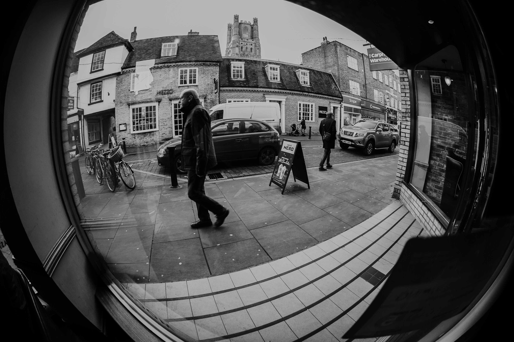
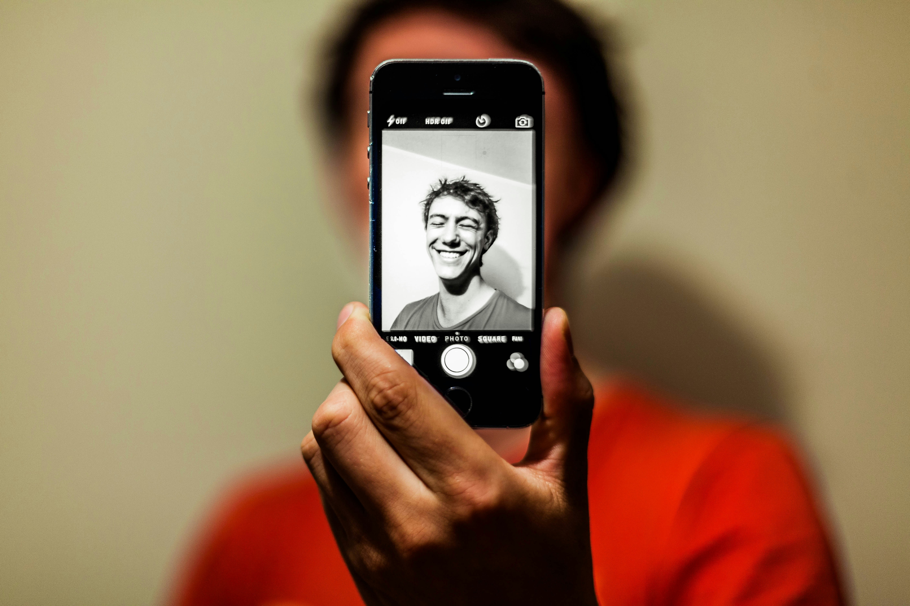

Conteúdo
Aqui compartilho dicas, tutoriais e experiências do mundo da fotografia. Aprenda técnicas e acompanhe meus projetos mais recentes.

Camera
Quais as melhores cameras do mercado para iniciantes? Às vezes é difícil escolher a câmera ideal para começar na fotografia. Neste artigo, exploro as melhores opções disponíveis, considerando fatores como orçamento, facilidade de uso e recursos essenciais para iniciantes.

Fisheye
Uma lente fisheye (ou olho de peixe) é uma lente ultra grande angular que capta uma visão panorâmica de até 180 graus ou mais, resultando numa imagem com distorção visual acentuada. Essa distorção curva linhas retas, conferindo às fotografias um efeito único, surreal e criativo.

Autorretrato
Um autorretrato é uma representação artística da própria pessoa, feita pelo próprio artista em várias formas como pintura, desenho, fotografia ou literatura. Serve como uma "autobiografia visual" que permite ao criador expressar a sua própria essência, sentimentos, estado emocional e visão de si mesmo, sendo também uma forma de auto-reflexão e exploração da identidade.